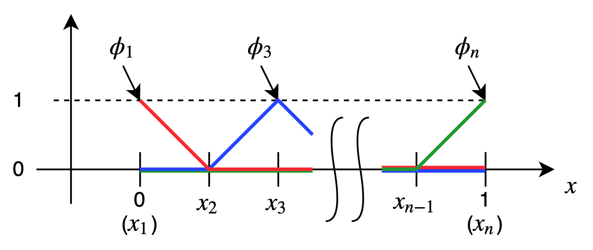
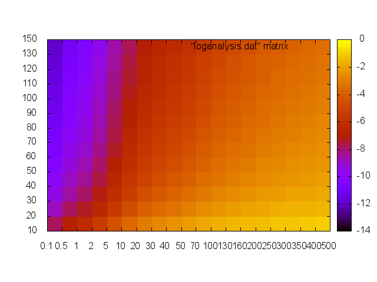

\(
\newcommand{\bm}[1]{\boldsymbol{#1}}
\newcommand{\d}{{\rm d}}
\newcommand{\div}{\nabla\cdot}
\newcommand{\grad}{\nabla}
\newcommand{\e}[1]{\bm{e}_{#1}}
\newcommand{\pard}[3]{\frac{\partial^{#2} #3}{\partial #1^{#2}}}
\newcommand{\T}{^{\rm T}}
\newcommand{\l}{<}
\newcommand{\g}{>}
\)
移流拡散方程式を今までの方法で解いてみる
今回は今までとは違う方程式を解いてみる。
\begin{align}
a \frac{\d f}{\d x}
-
\mu \frac{\d^2 f}{\d x^2}
&=
0
\qquad (0\leq x\leq 1) \\
%
%
f(0)
&= 1 \\
%
%
f(1)
&= 0
\end{align}
今回の方程式も大学生なら簡単に解析的に解けるものだ。
\begin{align}
f(x)
&=
1
-
\frac{
\exp\left(\frac{a}{\mu} x \right) -1
}{
\exp\left(\frac{a}{\mu} \right) -1
}
\end{align}
さて、有限要素法でこれを解いてみる。
重み関数\(w\)を用いて、弱形式は次のようになる。(ディリクレ条件より\(w(0)=w(1)=0\))
\begin{align}
a\int_0^1
w \frac{\d f}{\d x} \d x
+
\mu\int_0^1
\frac{\d w}{\d x} \frac{\d f}{\d x} \d x
&=
0
\end{align}
そして、次のグラフのような基底関数を用いた時、
\(w\)と\(f\)は次の式のように近似される。

\begin{align}
w^h
&=
w_2 \phi_2
+
w_3 \phi_3
+
\cdots
+
w_{n-1} \phi_{n-1} \\
%
%
f^h
&=
f_1 \phi_1
+
f_2 \phi_2
+
\cdots
+
f_n \phi_n
\end{align}
ここで、\(w^h(0) = w^h(1) = 0\)から、
\(w_1 = w_n = 0\)としている。
なお、ディリクレ条件から、
\begin{align}
f_1 &= 1 & f_n &= 0
\end{align}
が得られる。これらを弱形式に代入して連立方程式を得ると、
\begin{align}
\sum_{j=2}^{n-1}
m_{ij} f_j
&=
-m_{i1}
\qquad
(i = 2,3,\cdots,n-1) \\
%
%
m_{ij}
&=
\frac{a}{\mu}
\int_0^1
\phi_i \frac{\d \phi_j}{\d x} \d x
+
\int_0^1
\frac{\d\phi_i}{\d x} \frac{\d\phi_j}{\d x} \d x
\end{align}
複数の\(n\)と\(\frac{a}{\mu}\)の組み合わせで解き、
それぞれの結果の厳密解との差(L2ノルム)を図に示す。
ここで、グラフの縦軸は領域の分割数\(n\)、
横軸は\(\frac{a}{\mu}\)である。そして、グラフの値(\(z\)値)は
L2ノルムの常用対数をとったものである。
例えば、\(n=70\)、\(\frac{a}{\mu}=50\)での誤差は
1.30E-05である。
